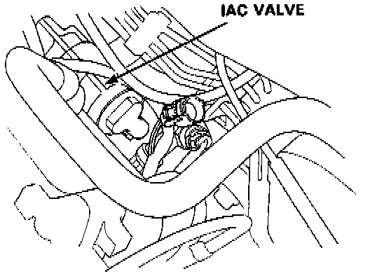
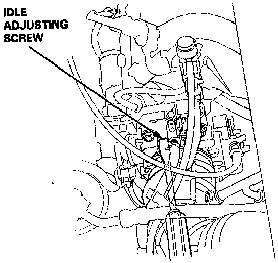

USA
NOTE: When setting the idle speed, check the following items:- The Malfunction Indicator Light has not been reported on
- Ignition timing
- Spark plugs
- Air cleaner
- Positive Crankcase Ventilation system
1. Start the engine. Hold the engine at 3,000 rpm with no load (A/T in N or P position, M/T in neutral) until the radiator fan comes on, then let it idle.
2. Connect a tachometer.
3. Disconnect the 2P connector from the Idle Air Control (IAC) valve.
Idle Air Control (IAC) Valve Location:

4. Start the engine with the accelerator pedal slightly depressed. Stabilize the rpm at 1,000, then slowly release the pedal until the engine idles.
5. Check idling in no-load conditions: headlights, blower fan, rear defogger, radiator fan, and air conditioner are not operating.
Idle speed should be 480±50 RPM
Adjust the idle speed, if necessary, by turning the idle adjusting screw.
NOTE: After adjust the idle speed in this step, check the ignition timing.
If it is out of spec, go back to step 4.
Idle Adjusting Screw Location:

6. Turn the ignition switch OFF.
7. Reconnect the 2P connector on the IAC valve, then remove the BACK UP (7.5 A) fuse in the under-hood fuse/relay box for 10 seconds to reset the ECM.
8. Restart and idle the engine with no-load conditions for one minute, then check the idle speed.
Idle speed should be 750±50 rpm.
9. Idle the engine for one minute with headlights (Low) ON and check the idle speed.
Idle speed should be 750±50 rpm.
10. Turn the headlights off.
Idle the engine for one minute with heater fan switch at HI and air conditioner on, then check the idle speed.
Idle speed should be 850±50 rpm.
NOTE: If the idle speed is not within specification, see Idle Control System Troubleshooting Guide.